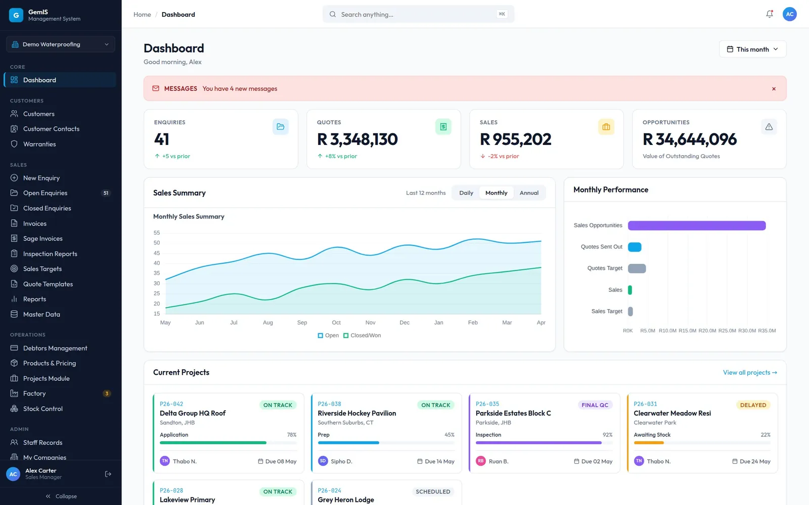
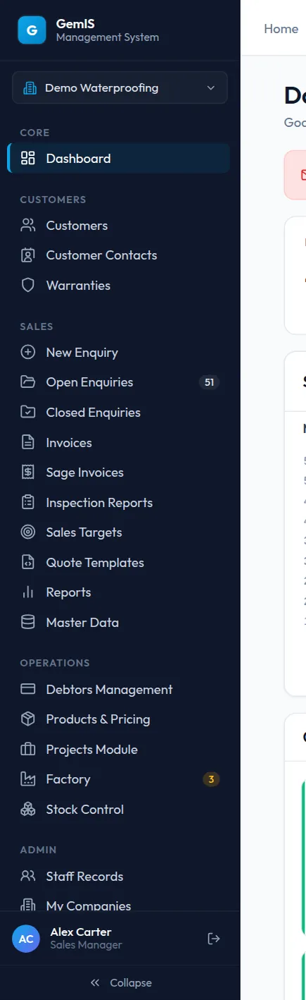
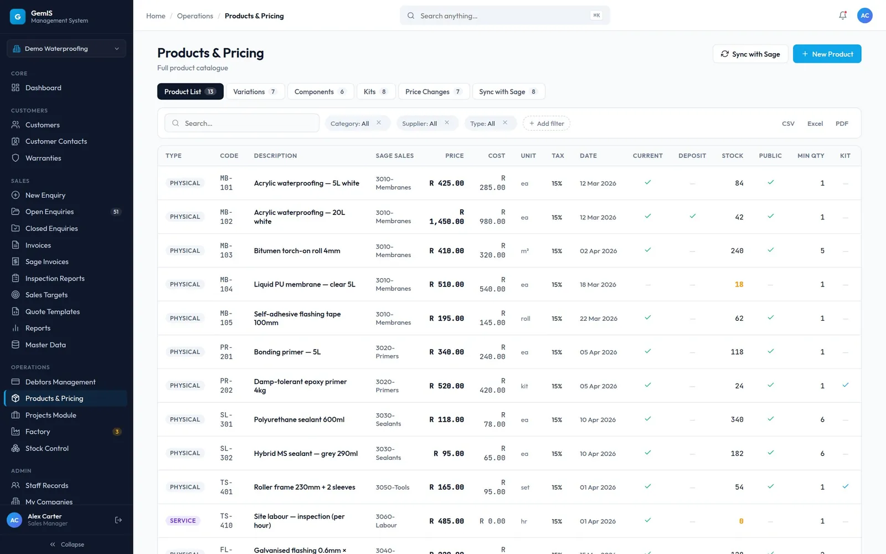
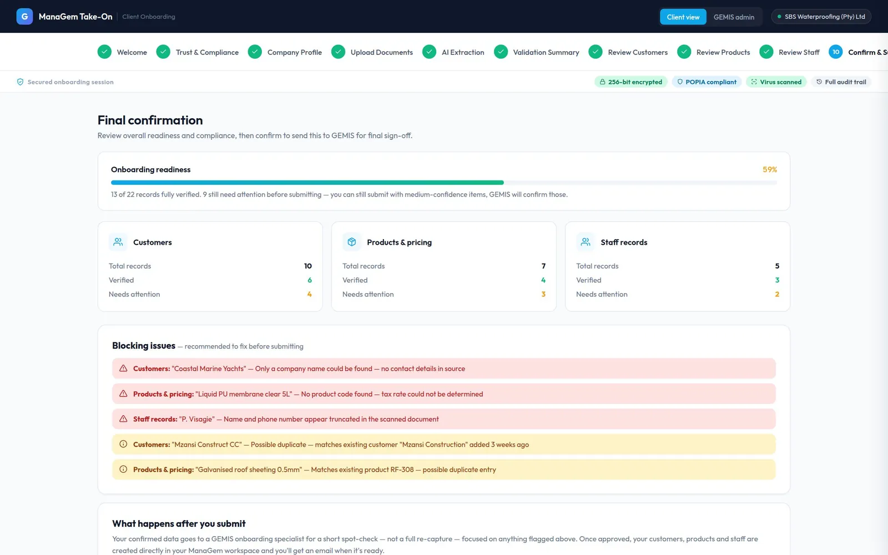
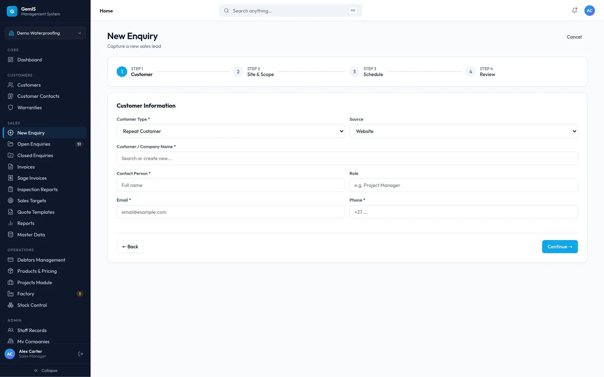
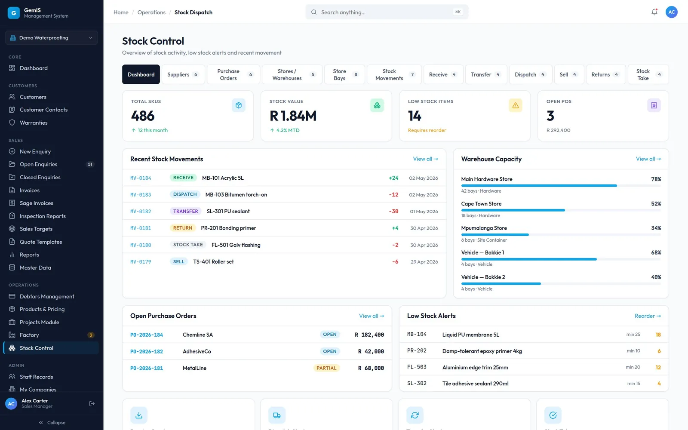
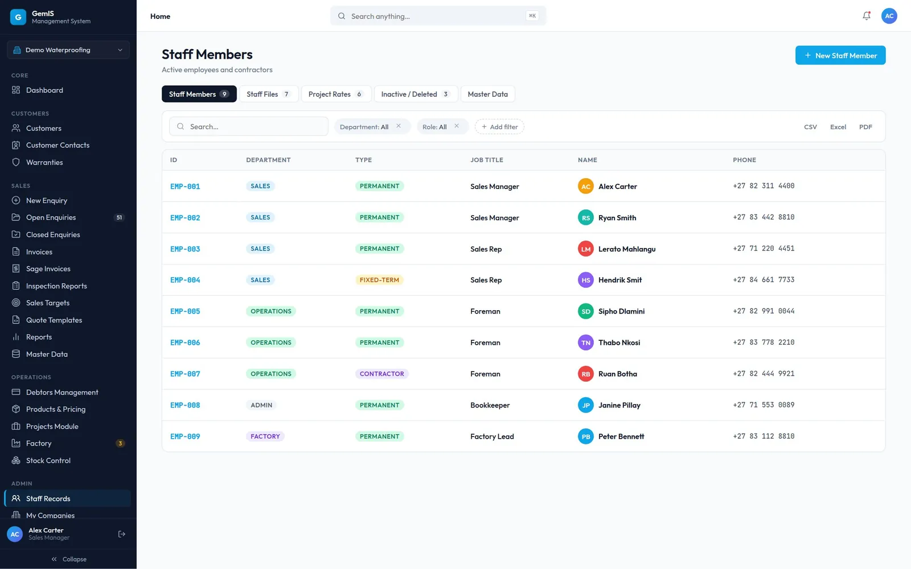
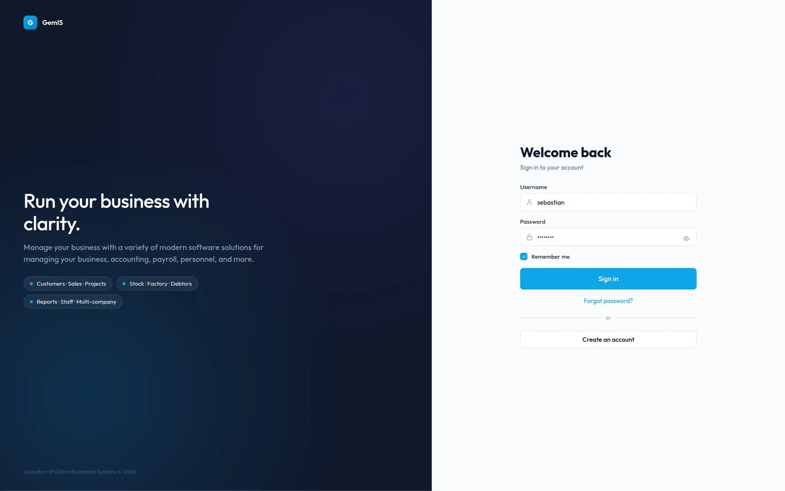

Enterprise Product Design · ERP · SaaS
Designing an ERP experience around the complexity of business operations.
ManaGEM is an ERP for trade businesses. My job was to make a product with a lot of moving parts — enquiries, quotes, production, stock, invoices, staff — feel like one coherent tool that people can find their way around without training.


01
Product context
GEM Information Systems builds ManaGEM, a management platform for trade businesses: companies that run one continuous chain from a customer’s first enquiry through to a paid invoice.
A single company might take an enquiry, send a quote, build the order in its factory, draw down stock, invoice the customer and chase the payment. In many businesses those steps live in separate spreadsheets, inboxes and accounting tools. ManaGEM brings them into one system, with modules for customers, sales, operations and administration, and support for running more than one company from the same login.
Because the product follows that chain, its structure matters: if customers are in the system but products are not, sales can’t quote; if staff records are missing, work can’t be assigned. The interface has to make those connections easy to follow.
02
The challenge
The challenge wasn’t a single screen. It was keeping a large product understandable as it grew.
Depth without getting lost
An ERP like this has dozens of areas. Traditional ERPs hide work behind deep navigation trees that people only learn through training.
Status people can actually read
Every record — an enquiry, a build, an invoice — moves through states. Legacy systems tend to express those in codes and abbreviations only long-time users can decode.
Related actions in one place
ERP workflows often scatter the actions for one record across menus, screens and modes, so the next step is hard to find.
Getting a new client running
Before a client could use ManaGEM, their customer lists, price lists and staff registers had to be interpreted and re-typed by hand — weeks of manual work between signing and using the system.
03
My role
Owned most UX/UI and product design decisions.
What that meant in practice
- Structured the information architecture and navigation model — how modules are grouped and how people move between them.
- Designed the shared patterns that every module uses: list views, tables, filters, status chips, forms and dashboard cards.
- Designed the core workflows shown here, including the dashboard, enquiries, invoicing, products and pricing, factory, stock control and staff records.
- Designed Take-On, the guided onboarding flow for bringing a new client’s data into ManaGEM.
- Maintained the design system the product is built from, scoped to what the engineering team could build.
Where others contributed
Design direction was reviewed through platform walkthroughs with the product owner, the onboarding team and the director. Development was carried out by the engineering team.
04
Product structure
Navigation is grouped by how the business works, not by how the data is stored.
The sidebar has five groups. A company switcher at the top lets people who manage more than one business change context without logging out.
ManaGEM
Core
- Dashboard
Customers
- Customers
- Customer contacts
- Warranties
Sales
- New enquiry
- Open enquiries
- Closed enquiries
- Invoices
- Sage invoices
- Inspection reports
- Sales targets
- Quote templates
- Reports
- Master data
Operations
- Debtors management
- Products & pricing
- Projects
- Factory
- Stock control
Admin
- Staff records
- My companies
Taken from the live navigation. Counts in the sidebar (for example open enquiries, factory alerts) show where work is waiting.
The chain the product follows
- 01Customer
- 02Enquiry & quote
- 03Production
- 04Stock
- 05Invoice
- 06Payment
One workflow, step by step
Capturing a new enquiry is split into four steps, with progress always visible, so a long form never arrives as one wall of fields:
- 01CustomerWho it is, and where the lead came from
- 02Site & scopeWhere the work is and what it involves
- 03ScheduleWhen it needs to happen
- 04ReviewCheck before it is created


05
Key design decisions
Decision 01
Lead every list with search and live counts
- The challenge
- People were expected to remember where things lived in a deep menu before the product was useful to them.
- Considerations
- Deeper menus and saved filters would help experienced users but do little for someone new. Search only helps if it is the first thing you see.
- My decision
- Every list view opens with a search field and a row of live counts for the stages of that workflow, followed by tabs, filters and export.
- Rationale
- People can type what they want instead of navigating to it, and the counts answer “how much is waiting?” before they scroll.
Evidence

Decision 02
One plain-language status system across every module
- The challenge
- Each module had its own way of describing state, so the same idea could look different from one screen to the next.
- Considerations
- Module-specific colours would allow more variety, but people would have to relearn them on every screen.
- My decision
- A single set of status chips with plain words — Paid, Partial, Unpaid, Overdue; Repeat customer, Scheduled, Quoted — and consistent colour meaning everywhere.
- Rationale
- Status is the thing people scan for most. Words carry the meaning, so the chips still work for people who can’t distinguish the colours, and the same colour means the same thing in every module.
Evidence

Decision 03
Put actions where the work happens
- The challenge
- Related actions were spread across menus, so finding the next step meant leaving the record you were working on.
- Considerations
- A global action menu is consistent but far from the record. Inline actions are closer but can clutter tables.
- My decision
- Primary page actions (New product, New job) sit at the top right of each page; sync, export and record-level actions sit beside the lists they affect.
- Rationale
- The next step is always within reach of the thing it acts on, and the page-level button is always in the same place.
Evidence


Decision 04
Show production as a pipeline, not a list
- The challenge
- Factory work moves through clear stages, and people outside production need to know where an order is without opening it.
- Considerations
- A plain table of jobs is complete but makes it hard to see bottlenecks at a glance.
- My decision
- The factory dashboard leads with counts for pending jobs, active builds and work ready to invoice, then a five-stage pipeline: Pending, In build, QC check, Ready, Invoiced.
- Rationale
- The pipeline mirrors how the work actually moves, and the “Not invoiced” count links production straight back to finance.
Evidence

Decision 05
Make onboarding a guided, reviewable flow
- The challenge
- Getting a new client running meant weeks of re-typing their customer, product and staff records by hand.
- Considerations
- A fully automatic import would be quicker to demonstrate, but a business owner has to trust what goes into their system. A black box would fail that test.
- My decision
- Take-On: the client uploads their existing documents, records are extracted for review, each one carries a plain-language state, and nothing goes live until the client confirms it and the GEMIS team completes a final check.
- Rationale
- Automation only helps if people can understand, correct and approve what it did. Two human checks keep the client in control of their own data.
Evidence



06
Interface design
The screens below are grouped by workflow. They share one layout: breadcrumbs and global search at the top, the page title and primary action, summary counts, then the work itself.
Sales From a new lead to an open enquiry


Operations Building and stocking the order


Admin The people doing the work


07
Live product demonstration


Walkthrough
See ManaGEM working
ManaGEM is a live product, so the full system isn’t public. I’m happy to walk you through it on a call — the navigation, the sales-to-invoice workflow and the decisions behind them — using demo data.
The design prototype is a high-fidelity, partly interactive model of the product with demo data. Some actions show the pattern without carrying it out.
08
Outcome and reflection
What was delivered
- An information architecture and navigation model covering customers, sales, operations and admin.
- Designs for the core workflows, from a new enquiry through production, stock and invoicing.
- One set of shared patterns — search-first lists, plain-language status, contextual actions, step-by-step forms.
- The Take-On onboarding flow and the design system used across both.
What I learned
I started out treating this as an interface update and finished treating it as a problem of trust and structure. People don’t need more features on screen; they need to know where they are, what state their work is in and what happens next.
Enterprise design is negotiated. The constraints — a small engineering team, new modules phasing in next to older ones — pushed me towards a smaller set of patterns that work everywhere, which turned out to be the most useful thing I designed.
What I’d do next
Watch people use the product with their own work: how they find things, where the status language helps or confuses, and how long it takes a new client to get running.